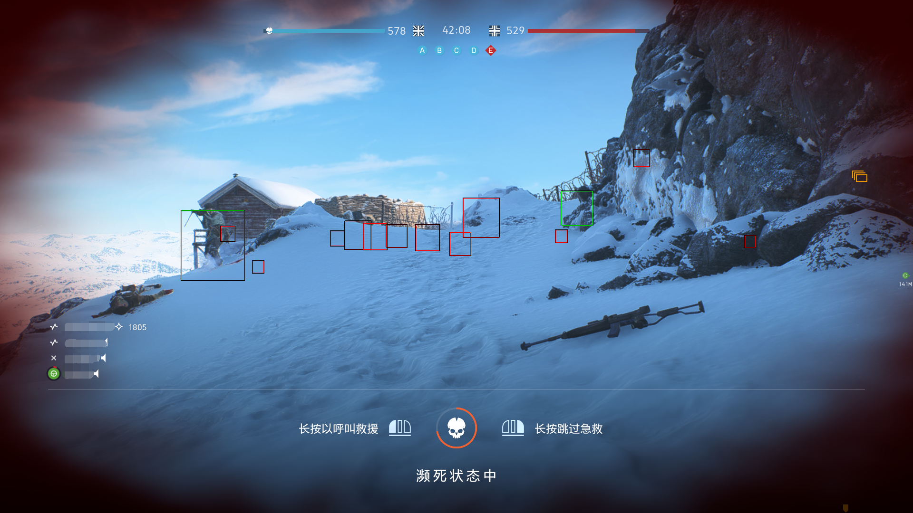

消除任何站在你对面的对手，UI完全可定制!3D ESP和2D雷达帮助显示你盟军和敌人玩家的确切位置。跟踪敌人的每一个动作，在每种情况下都占上风。
|
|  |
| 在你玩的战场 5 的每场比赛中，可随时查看所有敌方玩家的确切位置，并配备完全可自定义的 3D ESP以及2D 雷达。有了这些信息，你可以追捕敌人的坦克和小队，或可成功地防御或攻击目标。你可以几乎总是在记分牌上名列前茅，因为你得到更多的杀戮和熟练地避免死亡，总是知道下一个威胁从何而来。排名比以往任何时候都快，因为你得分更多，并可以迅速完成挑战，得到炸药，手榴弹和更多的帮助，轻松获取这些BFV视觉黑客功能。 |
|
何时需要安装战场 5 自瞄黑客
你厌倦了在战场上被比你玩这个系列时间更长的玩家砍倒吗？ 如果是这样，你可能有兴趣找到方法来改善你的游戏。最好的方法之一是安装战场5瞄准机器人。随着目标机器人黑客安装，你将能够瞄准能量和火远离没有任何担心击中你的目标。因为你将能够有效地击中任何目标，它将使游戏更令人兴奋和回报给你。这是最好的黑客之一，你可以在任何游戏模式中使用，它是可用于战地5所有模式。您将统治服务器。
|
|
|
使用 BFV Hack VAC可以检测到吗
我们有多年辅助类的开发经验，尤其是正对VAC检测，可放心使用BFV Hack。
我们有三层保护，以确保你和你的帐户的安全。
使用我们的BFV Hakc，排名比任何人都快，并始终在获胜的团队。
|
|
|